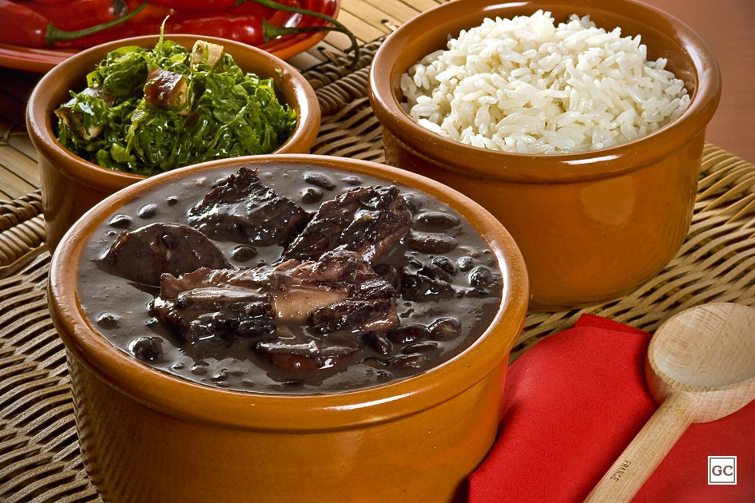

Feijoada

Descrição
Aprenda como fazer essa deliciosa feijoada completa tradicional em casa!
Às quartas e sábados você vai sempre encontrar no cardápio um dos pratos brasileiros mais tradicionais: a feijoada. Seja vegetariana, light ou convencional, essa iguaria é amada por todos! Então, que tal preparar a sua feijoada completa tradicional em casa? Servindo com arroz, couve, torresmo e farofa fica ainda mais perfeita, mas fique à vontade para consumi-la com qualquer outro acompanhamento. Veja!
Ingredientes
- 600g de feijão-preto
- 200g de costelinha de porco salgada
- 200g de carne-seca em cubos
- 100g de orelha de porco
- 100g de rabo de porco
- 100g de pé de porco
- 100g de lombo de porco salgado em cubos
- Suco de 1 limão
- 2 folhas de louro
- Sal e pimenta-do-reino a gosto
- 1 cebola com 5 cravos-da-índia espetados
- 8 xícaras (chá) de água
- 1/4 de xícara (chá) de cachaça
- 2 laranjas
- 300g de linguiça calabresa, paio e portuguesa em fatias
- 1 cebola em cubos
- 5 dentes de alho picados
Modo de preparo
- Deixe o feijão de molho em água por 6 horas. Deixe a costelinha, a carne-seca, a orelha, o rabo, o pé e o lombo de molho em água por 24 horas na geladeira, trocando a água por 4 vezes. Escorra, lave com o suco de limão e coloque em uma panela com água. Leve ao fogo médio, deixe levantar fervura, escorra e repita o processo para retirar o excesso de gordura.
- Coloque as carnes em uma panela, adicione o feijão com a água do molho e complete com mais água. Leve ao fogo baixo. Acrescente o louro, sal, pimenta, a cebola espetada com os cravos, a cachaça e as duas laranjas inteiras, com casca furada com uma faca afiada. Deixe levantar fervura e cozinhe por 50 minutos, retirando a espuma que se forma na superfície, com uma colher. Coloque a linguiça na metade do cozimento. Teste a maciez das carnes com um garfo e retire conforme estiverem prontas.
- Corte os pedaços de carne em tamanhos de 3cm. Quando o feijão e as carnes estiverem prontas, volte à panela todos os pedaços. Aqueça uma frigideira com o óleo, em fogo médio, doure a cebola e o alho por 5 minutos e misture na panela. Retire a cebola espetada e as laranjas. Deixe levantar fervura e sirva, se desejar, acompanhada de arroz branco e couve refogada.
Voltar para o Início